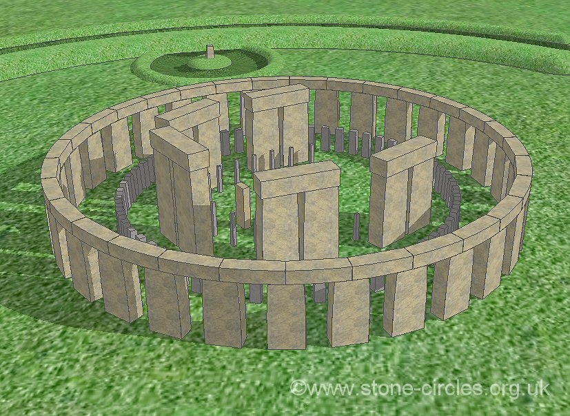

Abstract
In this class, we have explored various methods of graphic rendering and material rendering techniques. However, there is a very limited coverage of physical simulation, except for the cloth simulation. Physical simulation is extremely important in real world as it plays a vital role in many areas such as gaming, galaxy simulation for physics research, motion capture, animation, VR/AR, etc. To further our knowledge and experience in physical simulation, we expanded upon logic for breaking convex shapes to work on any mesh and added a disintegration algorithm that converts meshes to point clouds. The presentation medium itself is a scene modelled after historic monument, Stonehenge.
Technical Approach
-
The Three.Js Convex Breaker (linked in resources) served as the starter code for our project. We analyzed what the code was doing and then improved existing functionality and added additional features.
- General Pipeline:
- Initialize scene and camera.
- Define customizable parameters controllable by GUI.
- Load geometries and custom meshes.
- Prepare geometries and objects to be breakable.
- Rendering loop that applies updated GUI parameters and vertex positions based on physics engine.
- Breakable Objects:
- Summary - If the force at the impact points between two colliding objects have reached a threshold defined for the object based on its mass and physics properties, subdivide the object into pieces. At the point of impact, randomly choose a 2D plane with given a given predefined angle range from the normal at the impact point. Cut the given object into two pieces of sub-objects debris based on the 2D plane. Recursively subdivide the two sub-object debris into smaller pieces until the termination conditions are met:
- (1) max number of iteration has reached
- (2) stopped probabilistically by Russian Roulette
- (3) the size of the debris to subdivide has reached a minimum size
- Add final subdivided small debris into the scene. Remove the original major object from the scene. Rerender the scene.
- Technical Problems - Normal mesh loaded from online object files have varied configurations. Some are missing vertex normals, some are missing face normals, some are missing texture UV coordinates, etc. Also, Three.js Convex Breaker only accepts convex geometry, but mesh objects are usually not. It is very hard to directly plug and use existing function code base online to custom mesh geometry. Lots of time have been spent figuring out how to integrate custom mesh files (bunny, teapot, etc.) with the subdivision algorithm.
- Solutions - Walk through the vertices of mesh objects and recreate the geometry ourselves using three.js BufferGeometry and recalculate normals and other definitions as needed. A convex hull of the mesh based on its vertices was created. Unfortunately, this hull sometimes creates faces where it shouldn't, especially for more complex shapes like the Stanford Bunny. One proposed solution was to create small, "mini" convex meshes and break these on impact. This solution was attempted but discarded due to being very computationally heavy.
- Ball and Scene Interaction:
- Upon a mouse click event, obtain the mouse coordinates.
- Cast a directional ray from the camera position to the mouse coordinates.
- Create and load a sphere geometry (ball) with custom parameters and textures into the scene.
- Using Ammo.js functionalities, add a ball into the simulation world (defined inherently by C Bullet Physics) with directional ray calculated in last step and a given uniform velocity.
- At each rendering step, simulate delta timestamps for the simulation world. If the ball hits anything in the scene and the object is breakable, the steps described above are performed.
- Explosion of Mesh:
- To explode a mesh, we first remove the original mesh object from the scene.
- A point cloud system is generated from the mesh vertex positions.
- If there are not enough points, we recursively create more points by lerping between existing points, similar to the idea of the Catmull-Clark Loop Subdivision.
- In each rendering loop, we recalculate the positions of each point and rerender the scene given the time delta and speed. As time goes, it will look like an explosion effect.
- Free any disposed geometry’s memory in browser to avoid memory leaks.
- Flying Particles and Object Addition:
- For the flying particles, in the spirit of a vertex shader, we move and spawn the points (particles) in different sin wave patterns for its x, y, z coordinates, so in aggregate its trajectories look and feel random. It adds an air of mystery to the center of Stonehenge.
- Each object placement is "overloaded" into its own function so we can put the objects back into the scene after they have been destroyed or exploded.
- We also set random locations for object addition such as balls and stones to achieve unexpected massive destruction effects.
Results
- We acquired lots of experience with the three.js framework and real-time in-browser rendering.
- We became familiarized with the graphics pipeline for core physical interaction simulation and animation systems, integrating three.js effects and capabilities to simulate a holistic experience. That is...
- Scene, Camera, Geometry, Lights, Vertex and Fragment Shaders, Rendering Loop, Animation, Loaders
- We worked hard to precisely engineer the circular layout for a realistic virtual Stonehenge.
- We learned and developed creative algorithms to overcome challenges with object mesh incompatibility, particle effects and rendering, object subdivision and explosion logic.
Presentation Slides
Resources
The libraries we've taken advantage of most thus far include three.js, node.js, and ammo.js, among others. The collision shattering effects is built upon on the the convex object breaker by three.js.
The visual reference for this model was a generated 3D image of what Stonehenge would have looked like thousands of years ago:
Our model was built by eye using some cos and sin functions.
Below are some links to resources that have helped us pick up three.js and/or inspired our current features:
- Dynamic Particles
- https://threejs.org
- http://particle-love.com
- Particle Explosion
- Three.js Tutorials
- Ammo.js
- Raycaster
- Stonehenge History
Contributions
- Gan Tu: Insert Contribution
- Michael Gibbes: arranged and created the Stonehenge scene, modified and added functionality to the GUI, organized some of the random events (like the ball barrage), website maintenance
- Noah Jacobs: implemented particle objects, particle randomness (and other parameters), modified and added functionality to the GUI, helped adjust ball mass and radius, imported and edited some object files, debugging, videos and gifs for the writeup